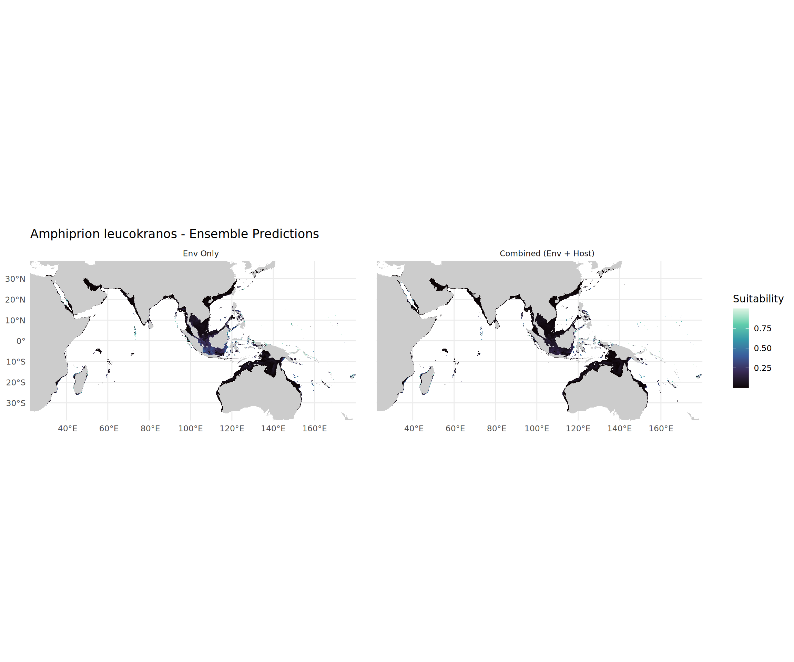
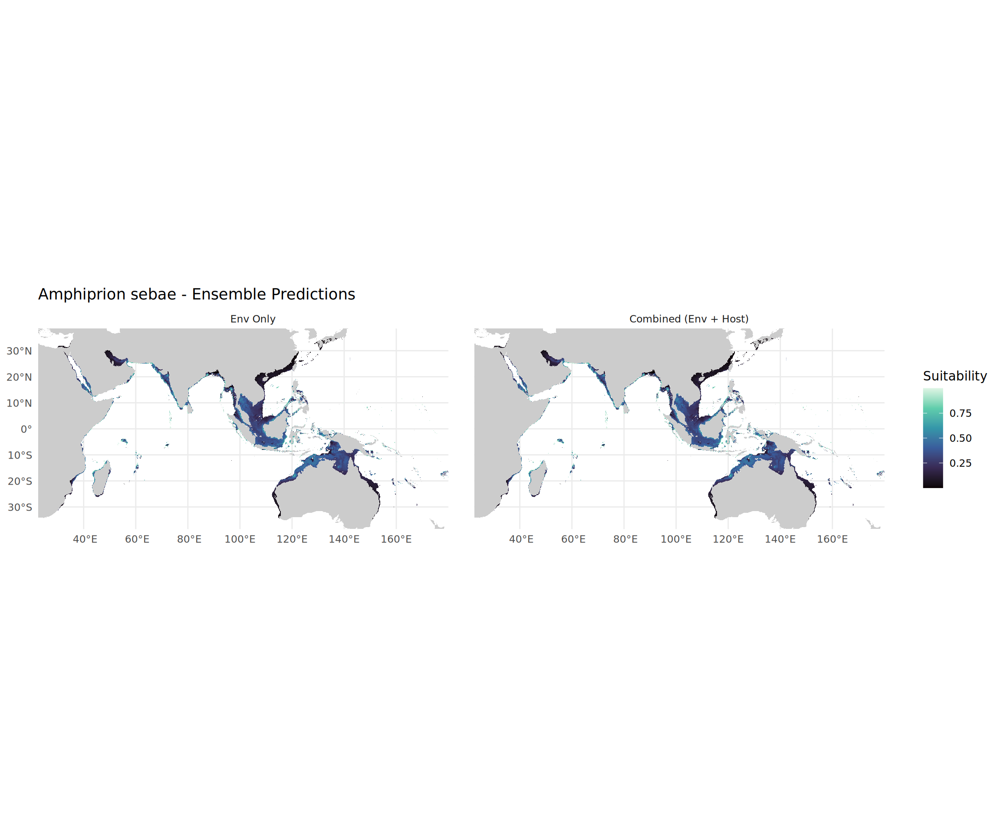
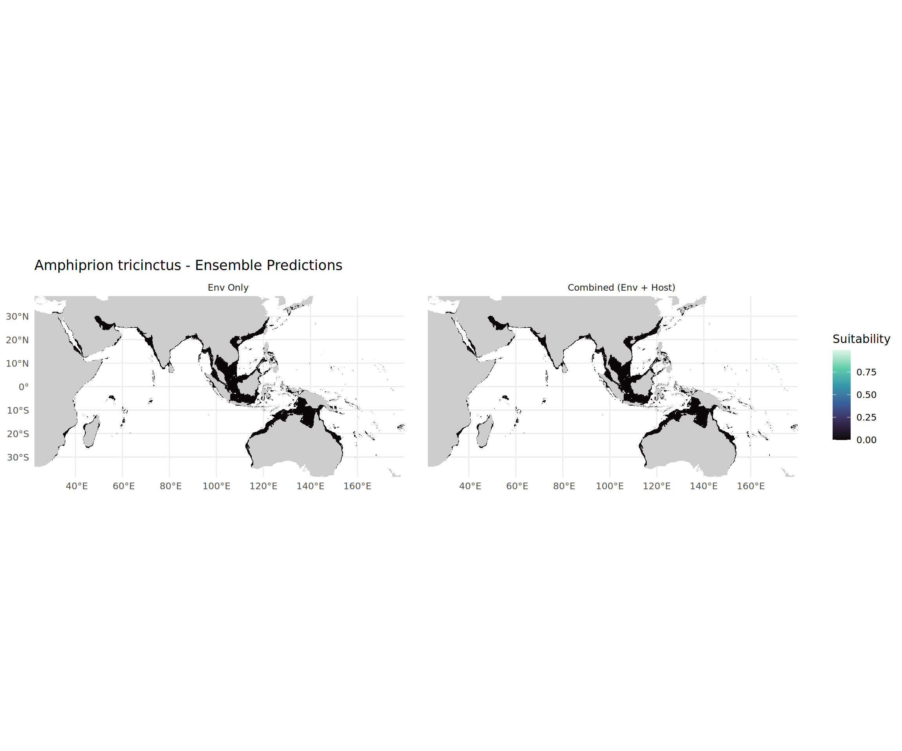

This document visualizes the outputs of the Parallel SDM Pipeline.
# --- 1. CONFIGURATION ---------------------------------------------------------# CHANGE THIS to switch between "test_run" and "final_run"RUN_ID <-"test_run"# ------------------------------------------------------------------------------# Librariesif (!require("pacman")) install.packages("pacman")pacman::p_load(tidyverse, terra, tidyterra, lme4, lmerTest, knitr, kableExtra, here)# Define Paths based on Run IDBASE_DIR <- here::here("outputs", RUN_ID)MODEL_DIR <-file.path(BASE_DIR, "models")PRED_DIR <-file.path(BASE_DIR, "predictions")# Validationif (!dir.exists(BASE_DIR)) stop(paste("Directory not found:", BASE_DIR))cat(paste("Analying output from:", RUN_ID, "\n"))
Analying output from: test_run
1. Statistical Comparison (The Looper Results)
We parse the individual iteration results (.rds files) to compare the performance (AUC & TSS) of Environmental-Only vs. Combined models.
# List all RDS filesrds_files <-list.files(MODEL_DIR, pattern ="\\.rds$", full.names =TRUE)if (length(rds_files) ==0) {stop("No model RDS files found. Did the pipeline run?")}# Function to parse filename and read statsread_model_stats <-function(fpath) {# Parse Filename: Species_Name_Type_iter_X.rds fname <-basename(fpath)# Regex extraction type <-str_extract(fname, "(EnvOnly|Combined)") iter <-str_extract(fname, "(?<=iter_)\\d+")# Species is everything before the Type sp <-str_remove(fname, paste0("_", type, ".*"))# Read RDS (It contains the ENMeval results table)# We take the first row (Best Model) df <-readRDS(fpath)# Handle cases where df might be empty or struct differentlyif(nrow(df) >0) {return(data.frame(species = sp,model_type = type,iteration =as.numeric(iter),auc = df$auc.val.avg, # Cross-validation AUCtss = df$cbi.val.avg, # continuous boyce index or similar proxy if TSS not calc directly by ENMeval 2.0# If using custom TSS, ensure it is in the RDSdelta_aicc = df$delta.AICc )) } else {return(NULL) }}# Load all data (Parallel reading for speed if many files)# For now, map_dfr is fast enough for <1000 filesstats_df <-map_dfr(rds_files, read_model_stats)# Clean up Species Namesstats_df$species <-gsub("_", " ", stats_df$species)head(stats_df) %>%kable() %>%kable_styling()
species
model_type
iteration
auc
tss
delta_aicc
Amphiprion akallopisos
Combined
1
0.7954474
0.72775
0
Amphiprion akallopisos
Combined
2
0.7911439
0.66650
0
Amphiprion akallopisos
EnvOnly
1
0.7890019
0.63500
0
Amphiprion akallopisos
EnvOnly
2
0.7893452
0.71400
0
Amphiprion akindynos
Combined
1
0.9514974
0.71175
0
Amphiprion akindynos
Combined
2
0.9523749
0.65100
0
Boxplot Comparison
Comparing the distribution of AUC scores across iterations.
Testing if the Combined model is significantly better, treating Species as a random effect.
# Fit LMM# Fixed Effect: model_type# Random Effect: speciesif (length(unique(stats_df$model_type)) >1) { m_auc <-lmer(auc ~ model_type + (1|species), data = stats_df)# Summaryprint(summary(m_auc))# Calculate p-value (Satterthwaite's method via lmerTest) coefs <-summary(m_auc)$coefficientsprint(coefs)} else {cat("Not enough model types for comparison (Check if both Env and Combined ran).")}
Linear mixed model fit by REML. t-tests use Satterthwaite's method [
lmerModLmerTest]
Formula: auc ~ model_type + (1 | species)
Data: stats_df
REML criterion at convergence: -466.8
Scaled residuals:
Min 1Q Median 3Q Max
-2.60665 -0.44849 -0.05121 0.53392 2.54957
Random effects:
Groups Name Variance Std.Dev.
species (Intercept) 1.380e-02 0.117458
Residual 9.906e-05 0.009953
Number of obs: 101, groups: species, 26
Fixed effects:
Estimate Std. Error df t value Pr(>|t|)
(Intercept) 0.848371 0.023081 25.108590 36.756 < 2e-16 ***
model_typeEnvOnly -0.008474 0.002004 74.015524 -4.229 6.63e-05 ***
---
Signif. codes: 0 '***' 0.001 '**' 0.01 '*' 0.05 '.' 0.1 ' ' 1
Correlation of Fixed Effects:
(Intr)
mdl_typEnvO -0.046
Estimate Std. Error df t value Pr(>|t|)
(Intercept) 0.848370630 0.023081127 25.10859 36.756032 2.352852e-23
model_typeEnvOnly -0.008474494 0.002003905 74.01552 -4.228989 6.632508e-05
2. Visualizing Ensemble Maps
Here we load the generated .tif files. Note that Combined models include the Host Ensemble as a predictor.
# Helper to find map pathget_map_path <-function(species, type, scenario="current") {# Clean name sp_clean <-gsub(" ", "_", species)# Construct Path: predictions/current/[fish_env OR fish_combined]/species.tif folder <-ifelse(type =="EnvOnly", "fish_env", "fish_combined") fpath <-file.path(PRED_DIR, scenario, folder, paste0(sp_clean, ".tif"))return(fpath)}# Pick 3 random species to checksample_species <-unique(stats_df$species)if(length(sample_species) >3) sample_species <-sample(sample_species, 3)# Load World Mapworld <- rnaturalearth::ne_countries(scale ="medium", returnclass ="sf")# Plot Loopfor (sp in sample_species) {# Load Rasters r_env <-try(terra::rast(get_map_path(sp, "EnvOnly")), silent=TRUE) r_cmb <-try(terra::rast(get_map_path(sp, "Combined")), silent=TRUE)if (inherits(r_env, "SpatRaster") &&inherits(r_cmb, "SpatRaster")) {# Crop for visualization (Indo-Pacific rough box) e <-ext(30, 180, -35, 35) r_env <-crop(r_env, e) r_cmb <-crop(r_cmb, e)# Calculate Difference (Biotic Effect)# If Combined < Env, the host is restricting the range r_diff <- r_cmb - r_env# Stack for plotting plot_stack <-c(r_env, r_cmb)names(plot_stack) <-c("Env Only", "Combined (Env + Host)") p <-ggplot() +geom_spatraster(data = plot_stack) +facet_wrap(~lyr) +scale_fill_viridis_c(na.value ="transparent", option ="mako") +geom_sf(data = world, fill ="grey80", color =NA) +coord_sf(xlim =c(30, 180), ylim =c(-35, 35)) +labs(title =paste(sp, "- Ensemble Predictions"),fill ="Suitability") +theme_minimal()print(p) } else {cat(paste("Missing maps for", sp, "\n")) }}



3. Host Ensemble Check
Verifying that the Host Ensembles (Phase 1) were generated correctly.
host_dir <-file.path(PRED_DIR, "current", "hosts")host_files <-list.files(host_dir, pattern="\\.tif$", full.names =TRUE)if (length(host_files) >0) {# Pick one r_host <- terra::rast(host_files[1]) sp_name <-basename(host_files[1])ggplot() +geom_spatraster(data =crop(r_host, ext(30, 180, -35, 35))) +scale_fill_viridis_c(option ="magma") +geom_sf(data = world, fill ="grey80", color =NA) +labs(title =paste("Host Ensemble:", sp_name),subtitle ="Used as predictor for Fish Combined Models") +theme_minimal()} else {cat("No Host Ensembles found.")}